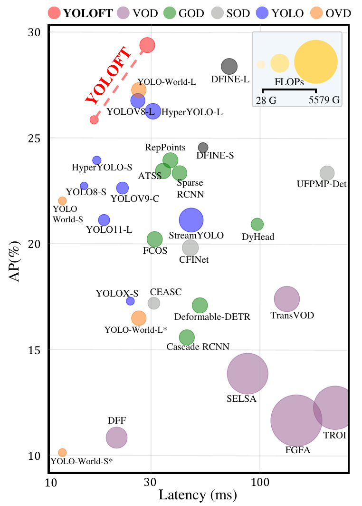

A benchmark for video understanding at the smallest scales
Small objects.
Full video context.
XS-VID is a densely annotated benchmark for video object detection, multi-object tracking, and single-object tracking in scenes where target scale is the central difficulty.
Annotated video frame · 1024 × 1024
Dataset at a glance
A difficult benchmark by construction.
XS-VID v2 provides a shared data contract across Detection, MOT, and SOT. The release contains media, unified annotations, development splits, and task-specific protocol files. Runnable evaluators are provided in the code release.
Inspect the release ↓Benchmark results
Three tracks. One difficult scale regime.
Compare every evaluated method under the released protocols, then open its official paper or implementation directly from the table.

What the benchmark reveals
Temporal input alone is not enough at extremely small scales.
The Detection table makes the transfer gap visible: several established VOD systems are substantially heavier than single-frame alternatives while remaining far from the leading XS-VID AP. The MOT and SOT views extend this comparison to trajectory-level evaluation.
Read the benchmark paper ↗YOLOFT baseline
A temporal baseline shaped by the benchmark.
YOLOFT strengthens fine-scale evidence before local temporal aggregation, while retaining an efficient Detection path.

YOLOFT-L is the released baseline for the Detection track. Its shared temporal representation also supports the released MOT and SOT task extensions.
29.3Detection AP
31.5MOT TAO mAP
59.63SOT success AUC
Sequence explorer
Follow targets in motion.
Browse public ground-truth annotations across contiguous video frames, then inspect any frame at native image coordinates.
Loading sequence
Boxes are public ground-truth annotations rendered at their native image coordinates.
Release v2
From download to reproducible evaluation.
Download XS-VID v2
Media, unified train/test annotations, development views, and protocol files are distributed together.
Run YOLOFT
The code release includes the temporal Detection backbone and task-specific MOT and SOT workflows.
Evaluate a track
Runnable Detection, TAO-compatible MOT, Track-by-Detection, and SOT evaluation commands are provided in the code release.
Quick start
git clone https://github.com/gjhhust/YOLOFT.git && cd YOLOFT && pip install -e ".[xsvid]"Citation
Use XS-VID in your work.
@article{guo2024xsvid,
title={XS-VID: An Extremely Small Video Object Detection Dataset},
author={Guo, Jiahao and Xu, Ziyang and Wu, Lianjun and Gao, Fei and Liu, Wenyu and Wang, Xinggang},
journal={arXiv preprint arXiv:2407.18137}, year={2024}
}Read the arXiv paper ↗Acknowledgements: the release builds on and includes integrations adapted from Ultralytics, DCNv3 / InternImage, BoT-SORT, TransT, and their respective dependencies. Please consult the included licenses before redistribution or commercial use.